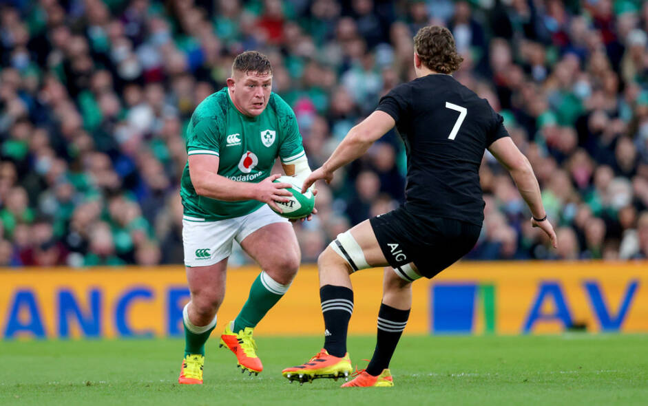
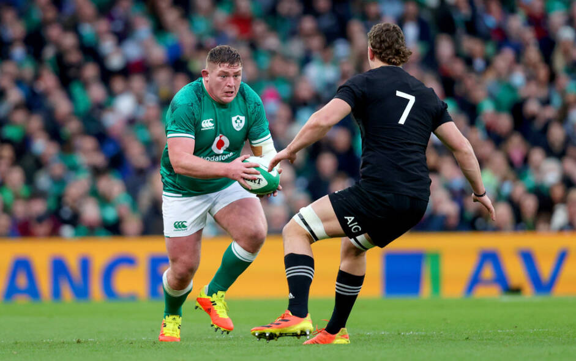

FUN FACT ABOUT TADGH Furlong.: tadgh Furlong (born 14 November 1992) is an Irish rugby union player for Leinster in the Pro14 and European Rugby Champions Cup. His preferred position is tighthead prop. Internationally, Furlong has represented Ireland and, in 2017 and 2021, the British & Irish Lions..